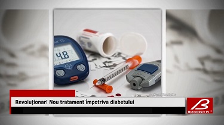

Revoluționar! Un nou tratament pentru diabet, acum și în Italia.
Tratamentul revoluţionar a fost testat cu succes de către cercetătorii Australieni și aprobat în toată lumea! Substanţa activă canagliflozină, concepută pentru scăderea nivelului de glucoză și stimularea producției de insulină sa dovedit un adevarat succes. Substanţa reduce cu 95% riscul de insuficienţă renală, cu 93% pe cel de insuficienţă cardiacă şi diminuează cu 90% posibilitatea de apariţie a unor evenimente cardiovasculare. ''Diabetul este cauza principală a insuficienţei renale la nivel mondial, însă timp de aproape două decenii nu au apărut tratamente noi pentru protejarea funcţiei renale'', au declarat specialiștii, preluați de Agerpres. Persoanele cu diabet şi boală renală au un risc extrem de ridicat de insuficienţă renală, atac de cord, accident vascular cerebral şi deces, iar prin administrarea zilnică a unei pastile cu această substanță speranța la viață crește considerabil! Medicamentul este disponibil în toată lumea, au adăugat oamenii de știință, iar această descoperire este considerată una majoră! Substanța va fi benefică celor peste 5 milioane de persoane care, potrivit estimărilor, s-ar confrunta cu insuficienţă renală, dar şi pentru alte sute de milioane care suferă de diabet. În exclusivitate pe teritoriul Italiei aceste pastile se vand sub brand-ul INSUMED și pot fi procurate aici pe site-ul importatorului oficial.
Acum puteți comanda și în Italia
